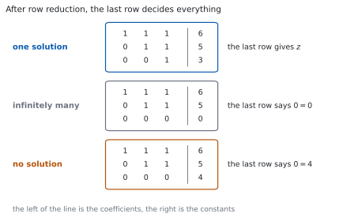
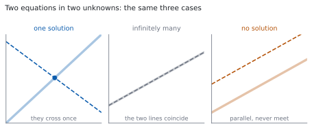

HL 1.16 — Systems of linear equations（連立 \(1\) 次方程式）
- \(3\) つの文字の連立 \(1\) 次方程式を、row reduction で解ける。
- 解が \(1\) つに決まる場合・無数にある場合・ない場合の \(3\) つがあることを知っている。
- 解が無数にあるとき、general solution を文字を使って書ける。
- 解がないとき、inconsistent であると書ける。
- 文字を含む係数について、どの場合になるかを調べられる。
The idea
1. Systems of linear equations and their solutions（連立 \(1\) 次方程式とその解）
シラバスは、次のように書いています。
Solutions of systems of linear equations (a maximum of three equations in three unknowns), including cases where there is a unique solution, an infinite number of solutions or no solution.
最大で「\(3\) つの式・\(3\) つの文字」です。 それ以上は出ません。
\[ \begin{aligned} x + y + z &= 6 \\ 2x - y + z &= 3 \\ x + 2y - z &= 2 \end{aligned} \tag{1}\]
解とは、\(3\) つの式を同時に満たす \((x,\ y,\ z)\) の組です。\(1\) つの式だけを満たしても、解ではありません。
書くときは、係数と定数だけを取り出した表にすると速くなります。これを augmented matrix と呼びます。
\[ \begin{array}{ccc|c} 1 & 1 & 1 & 6 \\ 2 & -1 & 1 & 3 \\ 1 & 2 & -1 & 2 \end{array} \]
縦線の左が係数、右が定数です。\(x\)、\(y\)、\(z\) を書かずに済むので、計算が短くなります。
覚える式はありません。手順を覚えます。
なお、この本では行列そのものは扱いません。上の表は、式を短く書くための道具です。
2. Row reduction: the three operations（row reduction：\(3\) つの操作）
シラバスは、解き方についても書いています。
These systems should be solved using both algebraic and technological methods, for example row reduction or matrices.
row reduction は、次の \(3\) つの操作だけを使って、式を簡単にしていく方法です。
| 操作 | 書き方 | 例 |
|---|---|---|
| \(2\) つの式を入れかえる | \(R_{1} \leftrightarrow R_{2}\) | \(1\) 行目と \(2\) 行目を交換 |
| \(1\) つの式を \(0\) でない数倍する | \(R_{2} \to 3R_{2}\) | \(2\) 行目を \(3\) 倍 |
| \(1\) つの式に、別の式の何倍かを足す | \(R_{2} \to R_{2} - 2R_{1}\) | \(2\) 行目から \(1\) 行目の \(2\) 倍を引く |
この \(3\) つは、解を変えません。 どれも「両辺に同じことをする」か「同じ式を並べかえる」だけだからです（Why it works）。
目標は、左下を \(0\) にしていくことです。 \(3\) つ目の式から \(x\) と \(y\) を消せば、\(z\) だけの式になります。
\(R_{2} \to 0 \times R_{2}\) とすると、式が \(1\) つ消えてしまいます。情報が減るので、解が変わります。
\(2\) 番目の操作は、\(0\) でない数に限ります。
3. A unique solution（解が \(1\) つに決まる場合）
式 1 を解きます。\(1\) 行目を使って、下の \(2\) 行から \(x\) を消します。
\[ R_{2} \to R_{2} - 2R_{1}: \qquad -3y - z = -9 \]
\[ R_{3} \to R_{3} - R_{1}: \qquad y - 2z = -4 \]
\(1\) 行目の \(-3y-z = -9\) は、両辺に \(-1\) を掛けて \(3y+z = 9\) としておきます。残ったのは \(2\) 文字の連立方程式です。
\[ \begin{aligned} 3y + z &= 9 \\ y - 2z &= -4 \end{aligned} \]
下の式から \(y = 2z - 4\) です。上に入れます。
\[ 3(2z-4) + z = 9 \ \Rightarrow \ 7z - 12 = 9 \ \Rightarrow \ z = 3 \]
\(z\) が決まったら、上へ戻ります。 これを back substitution と呼びます。
\[ y = 2(3) - 4 = 2, \qquad x = 6 - y - z = 6 - 2 - 3 = 1 \]
解は \((x,\ y,\ z) = (1,\ 2,\ 3)\) の \(1\) 組だけです。
\(2\) つの式だけで確かめると、\(3\) つ目を使いまちがえていても気づきません。
\(1+2+3 = 6\)、\(2-2+3 = 3\)、\(1+4-3 = 2\)。\(3\) つとも合いました。
4. Infinitely many solutions: the general solution（解が無数にある場合）
次の連立方程式を見ます。
\[ \begin{aligned} x + y + z &= 6 \\ x + 2y + 3z &= 14 \\ 2x + 3y + 4z &= 20 \end{aligned} \tag{2}\]
同じように \(x\) を消します。
\[ R_{2} \to R_{2} - R_{1}: \qquad y + 2z = 8 \]
\[ R_{3} \to R_{3} - 2R_{1}: \qquad y + 2z = 8 \]
\(2\) つが同じ式になりました。 \(3\) 行目から \(2\) 行目を引くと
\[ R_{3} \to R_{3} - R_{2}: \qquad 0 = 0 \]
です。これは「いつでも正しい」式で、何も決めません。 式が実質 \(2\) つしかないのに、文字は \(3\) つあります。
このときは、\(1\) つの文字を自由に決めます。 \(z = \lambda\) と置きます（\(\lambda\) はギリシャ文字のラムダで、どんな実数でもよい、という意味です）。
\[ y = 8 - 2\lambda, \qquad x = 6 - y - z = 6 - (8-2\lambda) - \lambda = -2 + \lambda \]
\[ (x,\ y,\ z) = (-2+\lambda,\ 8-2\lambda,\ \lambda), \qquad \lambda \in \mathbb{R} \tag{3}\]
これを general solution と呼びます。シラバスにも書かれています。
Finding a general solution for a system with an infinite number of solutions.
\(\lambda\) に数を入れるたびに、解が \(1\) つ出ます。 \(\lambda = 0\) なら \((-2,\ 8,\ 0)\)、\(\lambda = 3\) なら \((1,\ 2,\ 3)\) です。どちらも \(3\) つの式を満たします。
答案には、\(x\) と \(y\) を \(\lambda\) で表した式まで書いてください。
\(\lambda\) の代わりに \(t\) や \(s\) を使ってもかまいませんが、\(1\) 文字を新しく置いたことが分かるように書きます。
5. No solution: inconsistent systems（解がない場合）
式 2 の \(3\) 行目の右辺だけを、\(21\) に変えます。
\[ \begin{aligned} x + y + z &= 6 \\ x + 2y + 3z &= 14 \\ 2x + 3y + 4z &= 21 \end{aligned} \]
同じ操作をします。
\[ R_{2} \to R_{2} - R_{1}: \qquad y + 2z = 8 \]
\[ R_{3} \to R_{3} - 2R_{1}: \qquad y + 2z = 9 \]
\[ R_{3} \to R_{3} - R_{2}: \qquad 0 = 1 \]
\(0 = 1\) は、あり得ません。 ですから、\(3\) つの式を同時に満たす \((x,\ y,\ z)\) はありません。
シラバスは、この場合の呼び名を決めています。
Systems which have no solution(s) are inconsistent.
答案には The system is inconsistent, so there is no solution. と書きます。 「解なし」で止めず、どの行から \(0 = 1\) が出たかも書いてください。
6. Telling the three cases apart（\(3\) つの場合の見分け方）

図 1 のとおり、いちばん下の行が \(3\) つの場合を決めます。
| 下の行 | 場合 | 答案に書くこと |
|---|---|---|
| \(az = b\)（\(a \neq 0\)） | 解は \(1\) つ | \(z\) を出して back substitution |
| \(0 = 0\) | 解は無数 | \(z = \lambda\) と置いて general solution |
| \(0 = b\)（\(b \neq 0\)） | 解なし | inconsistent と書く |
\(0 = 0\) と \(0 = b\) を取りちがえないでください。 右辺が \(0\) かどうかだけのちがいですが、答えは正反対です。
TI-Nspire CX II には、連立 \(1\) 次方程式を解く機能があります。
menu → Algebra → Solve System of Linear Equations を選ぶと、式の個数と文字の個数をきかれます。\(3\) と \(3\) を入れて、係数を入力します。
解が \(1\) つに決まる場合は、これで答えが出ます。 検算にも使えます。
解が無数にある場合と、解がない場合は、画面の出方がちがいます。 電卓の出力をそのまま写しても general solution の形になっていないことがあるので、その \(2\) つは手で row reduction してください。
Paper 1 では使えません。 このページの例題と演習は、すべて手で解けるようにしてあります。
7. A picture in two variables（\(2\) 変数の図で見る）

\(3\) 変数の図はかきにくいので、\(2\) 変数で見ます。 \(1\) つの \(1\) 次方程式は、\(1\) 本の直線です（SL 2.1）。
図 2 のように、\(2\) 本の直線には \(3\) つの場合があります。
- \(1\) 点で交わる → 解が \(1\) つ
- 重なっている → 解が無数（直線上のすべての点）
- 平行で交わらない → 解なし
\(3\) 変数でも同じです。 \(1\) つの \(1\) 次方程式は平面を表し、\(3\) つの平面が \(1\) 点で交わるか、直線や平面を共有するか、まったく共有しないかに分かれます。シラバスも、そのつながりを書いています。
Link to: intersection of lines and planes (AHL 3.18).
平面としての見方は、Topic 3 で扱います。 ここでは、式の計算だけで \(3\) つを見分けられるようにしておけば十分です。
Why it works
なぜ、\(3\) つの操作で解が変わらないのか
第 2 節 の \(3\) つを、順に見ます。
入れかえ。 式を書く順番を変えただけです。\(3\) つを同時に満たす組は、並べる順によりません。
\(0\) でない数倍。 \(E = 0\) という式を \(cE = 0\) に変えます。\(c \neq 0\) なら、\(E = 0\) と \(cE = 0\) は同じ組で成り立ちます。 逆向きには \(\dfrac{1}{c}\) を掛ければ戻せます。\(c = 0\) だと戻せません。
別の式の何倍かを足す。 \(E_{1} = 0\) と \(E_{2} = 0\) の \(2\) つを、\(E_{1} = 0\) と \(E_{2} + cE_{1} = 0\) に変えます。
- もとの \(2\) つを満たす組は、\(E_{1} = 0\) かつ \(E_{2} = 0\) なので、\(E_{2}+cE_{1} = 0+c \times 0 = 0\) も満たします。
- 逆に、新しい \(2\) つを満たす組は、\(E_{2} = (E_{2}+cE_{1}) - cE_{1} = 0 - 0 = 0\) を満たします。
どちらの向きにも移れるので、解の集合は同じです。 ここが、「操作をしても答えが変わらない」ことの中身です。
なぜ、いちばん下の行だけで決まるのか
row reduction が終わった形では、\(3\) 行目には \(z\) しか残っていません。
- \(az = b\) で \(a \neq 0\) なら、\(z\) がただ \(1\) つに決まります。すると \(2\) 行目から \(y\)、\(1\) 行目から \(x\) が決まるので、解は \(1\) 組です。
- \(0 = 0\) なら、\(z\) に何を入れても \(3\) 行目は成り立ちます。\(z\) を決めるものがありません。 \(z\) を決めれば \(y\) と \(x\) は決まるので、解は \(z\) の値だけ、つまり無数にあります。
- \(0 = b\) で \(b \neq 0\) なら、この行を満たす \(z\) がありません。\(1\) つも解がありません。
\(3\) 通りしかないのは、このためです。「解がちょうど \(2\) 組」は起こりません。
式が足りないとき
文字が \(3\) つで式が \(2\) つしかないと、row reduction のあとに残る行も \(2\) 本です。\(z\) を決める行がありません。
ですから、解は無数にあるか、\(1\) つもないかのどちらかです。\(1\) 組だけ、ということは起こりません（演習 8）。
同じことが、式が \(3\) 本でも起こります。 \(3\) 本のうち \(1\) 本が、他の \(2\) 本から作れてしまう場合です（第 4 節 が、その形でした）。本数ではなく、「新しいことを言っている式が何本あるか」が効きます。
Worked examples
問題文は英語です。意味が理解できなかったら、問題文の下の「日本語訳」を開いてください。解説は日本語です。
例題も演習も、すべて電卓なしで解けます。 Paper 1 のつもりで解いてください。
例題 1 Solve the system of equations
\[ \begin{aligned} x + y + z &= 4 \\ 2x - y + 3z &= 14 \\ 3x + 2y - z &= 1 \end{aligned} \]
日本語訳
次の連立方程式を解きなさい。
第 3 節 の手順どおりです。\(1\) 行目を使って、\(x\) を消します。
\[ R_{2} \to R_{2} - 2R_{1}: \qquad -3y + z = 6 \]
\[ R_{3} \to R_{3} - 3R_{1}: \qquad -y - 4z = -11 \]
\(3\) 行目は、両辺に \(-1\) を掛けて \(y + 4z = 11\) とします。\(2\) 行目から \(z = 6 + 3y\) なので、これを入れます。
\[ y + 4(6+3y) = 11 \ \Rightarrow \ 13y + 24 = 11 \ \Rightarrow \ y = -1 \]
back substitution で戻ります。
\[ z = 6 + 3(-1) = 3, \qquad x = 4 - (-1) - 3 = 2 \]
解は \((x,\ y,\ z) = (2,\ -1,\ 3)\) です。
検算。 \(3\) つの式すべてに入れます。
\[ 2 + (-1) + 3 = 4, \qquad 4 - (-1) + 9 = 14, \qquad 6 + (-2) - 3 = 1 \]
\(3\) つとも合いました ✓
検算（消した式のほうで）。 \(-3y + z = -3(-1) + 3 = 6\) ✓ 途中の式でも合っているので、引き算のところでまちがえていません。
\[R_{2} \to R_{2} - 2R_{1}: \quad -3y + z = 6\]
\[R_{3} \to R_{3} - 3R_{1}: \quad -y - 4z = -11, \ \text{ that is } \ y + 4z = 11\]
From the first of these, \(z = 6+3y\). Substituting:
\[y + 4(6+3y) = 11, \quad 13y = -13, \quad y = -1\]
\[z = 6+3(-1) = 3, \qquad x = 4-(-1)-3 = 2\]
The solution is \(x = 2\), \(y = -1\), \(z = 3\).
例題 2 Show that the system
\[ \begin{aligned} x + 2y - z &= 3 \\ 2x + 5y + z &= 10 \\ 3x + 7y \phantom{{}+ 0z} &= 13 \end{aligned} \]
has an infinite number of solutions, and find the general solution.
日本語訳
次の連立方程式の解が無数にあることを示し、general solution を求めなさい。
\(3\) 行目に \(z\) がないので、係数は \(0\) です。\(x\) を消します。
\[ R_{2} \to R_{2} - 2R_{1}: \qquad y + 3z = 4 \]
\[ R_{3} \to R_{3} - 3R_{1}: \qquad y + 3z = 4 \]
\(2\) つが同じ式になりました。
\[ R_{3} \to R_{3} - R_{2}: \qquad 0 = 0 \]
いちばん下が \(0 = 0\) なので、解は無数にあります（第 6 節）。
\(z = \lambda\) と置きます。
\[ y = 4 - 3\lambda, \qquad x = 3 - 2y + z = 3 - 2(4-3\lambda) + \lambda = -5 + 7\lambda \]
\[ (x,\ y,\ z) = (-5+7\lambda,\ 4-3\lambda,\ \lambda), \qquad \lambda \in \mathbb{R} \]
検算。 \(\lambda = 1\) で、\(3\) つの式に入れます。 \((x,\ y,\ z) = (2,\ 1,\ 1)\) です。
\[ 2 + 2 - 1 = 3, \qquad 4 + 5 + 1 = 10, \qquad 6 + 7 = 13 \]
\(3\) つとも合いました ✓
検算（別の \(\lambda\) で）。 \(\lambda = 0\) なら \((-5,\ 4,\ 0)\) で、\(-5+8-0 = 3\)、\(-10+20+0 = 10\)、\(-15+28 = 13\) ✓ \(2\) つの \(\lambda\) で合えば、式の組み立てはまず正しいです。
\[R_{2} \to R_{2} - 2R_{1}: \quad y + 3z = 4\]
\[R_{3} \to R_{3} - 3R_{1}: \quad y + 3z = 4\]
\[R_{3} \to R_{3} - R_{2}: \quad 0 = 0\]
The last row places no restriction, so there are infinitely many solutions.
Let \(z = \lambda\), \(\lambda \in \mathbb{R}\). Then \(y = 4-3\lambda\) and
\[x = 3 - 2(4-3\lambda) + \lambda = -5 + 7\lambda\]
The general solution is \(x = -5+7\lambda\), \(y = 4-3\lambda\), \(z = \lambda\), \(\lambda \in \mathbb{R}\).
例題 3 Show that the system
\[ \begin{aligned} x + 2y - z &= 3 \\ 2x + 5y + z &= 10 \\ 3x + 7y \phantom{{}+ 0z} &= 14 \end{aligned} \]
has no solution.
日本語訳
次の連立方程式に解がないことを示しなさい。
例題 2 と、\(3\) 行目の右辺だけがちがいます。同じ操作をします。
\[ R_{2} \to R_{2} - 2R_{1}: \qquad y + 3z = 4 \]
\[ R_{3} \to R_{3} - 3R_{1}: \qquad y + 3z = 5 \]
左辺は同じで、右辺だけがちがいます。 引きます。
\[ R_{3} \to R_{3} - R_{2}: \qquad 0 = 1 \]
\(0 = 1\) はあり得ません。 ですから、\(3\) つの式を同時に満たす組はありません。
試験ではこう書く
After the row operations \(R_{2} \to R_{2}-2R_{1}\) and \(R_{3} \to R_{3}-3R_{1}\) the second and third equations become \(y+3z = 4\) and \(y+3z = 5\). Subtracting one from the other gives \(0 = 1\), which is impossible. So no values of \(x\), \(y\) and \(z\) can satisfy all three equations at once: the system is inconsistent and has no solution.
（\(2\) 行目と \(3\) 行目の左辺が同じで右辺がちがうので、引くと \(0 = 1\) になる。これはあり得ないので解はない、という意味です。）
検算。 左辺が本当に同じかを見ます。 \(y+3z\) と \(y+3z\) で、係数が一致しています ✓ ここがずれていたら、\(0 = 1\) にはなりません。
検算（\(1\) つ試してみる）。 例題 2 の解の \(1\) つ \((2,\ 1,\ 1)\) を入れると、\(3\) 行目は \(6+7 = 13\) で、\(14\) になりません ✓ \(3\) 行目だけが合わない形になっています。
\[R_{2} \to R_{2} - 2R_{1}: \quad y + 3z = 4\]
\[R_{3} \to R_{3} - 3R_{1}: \quad y + 3z = 5\]
\[R_{3} \to R_{3} - R_{2}: \quad 0 = 1\]
This is impossible, so the system is inconsistent and has no solution.
例題 4 Consider the system
\[ \begin{aligned} x + 2y + 3z &= 4 \\ 2x + 5y + 4z &= 7 \\ 3x + 7y + kz &= 11 \end{aligned} \]
where \(k\) is a real number.
(a) Find the value of \(k\) for which the system does not have a unique solution.
(b) For that value of \(k\), find the general solution.
日本語訳
\(k\) を実数として、上の連立方程式を考えます。
(a) 解が \(1\) つに決まらなくなる \(k\) の値を求めなさい。
(b) その \(k\) について、general solution を求めなさい。
(a) \(k\) が入っていても、手順は同じです。\(x\) を消します。
\[ R_{2} \to R_{2} - 2R_{1}: \qquad y - 2z = -1 \]
\[ R_{3} \to R_{3} - 3R_{1}: \qquad y + (k-9)z = -1 \]
\(2\) つの左辺から \(y\) を消します。
\[ R_{3} \to R_{3} - R_{2}: \qquad (k-9+2)z = 0, \ \text{ つまり } \ (k-7)z = 0 \]
\(k \neq 7\) なら \(z = 0\) に決まり、解は \(1\) つです。 ですから、\(1\) つに決まらないのは
\[ k = 7 \]
のときです。
(b) \(k = 7\) を入れると、いちばん下の行は \(0 = 0\) です。解は無数にあります。 \(z = \lambda\) と置きます。
\[ y = 2\lambda - 1, \qquad x = 4 - 2y - 3z = 4 - 2(2\lambda-1) - 3\lambda = 6 - 7\lambda \]
試験ではこう書く
After \(R_{2} \to R_{2}-2R_{1}\) and \(R_{3} \to R_{3}-3R_{1}\), then \(R_{3} \to R_{3}-R_{2}\), the last row becomes \((k-7)z = 0\). If \(k \neq 7\) this forces \(z = 0\) and back substitution then determines \(y\) and \(x\), so the solution is unique. Hence the system fails to have a unique solution only when \(k = 7\). When \(k = 7\) the last row is \(0 = 0\), which places no restriction on \(z\), so there are infinitely many solutions. Putting \(z = \lambda\) gives \(y = 2\lambda - 1\) and \(x = 6 - 7\lambda\).
（最後の行が \((k-7)z = 0\) になるので、\(k \neq 7\) なら \(z = 0\) に決まる。\(k = 7\) のときだけ \(0 = 0\) になり、解が無数になる、という意味です。）
検算。 \(k = 7\)、\(\lambda = 1\) で、\(3\) つの式に入れます。 \((x,\ y,\ z) = (-1,\ 1,\ 1)\) です。
\[ -1 + 2 + 3 = 4, \qquad -2 + 5 + 4 = 7, \qquad -3 + 7 + 7 = 11 \]
\(3\) つとも合いました ✓
検算（\(k \neq 7\) のほう）。 \(k = 8\) とすると \(z = 0\)、\(y = -1\)、\(x = 4-2(-1) = 6\) です。\(3\) 行目は \(18 - 7 + 0 = 11\) ✓ 確かに \(1\) つに決まりました。
(a)
\[R_{2} \to R_{2} - 2R_{1}: \quad y - 2z = -1\]
\[R_{3} \to R_{3} - 3R_{1}: \quad y + (k-9)z = -1\]
\[R_{3} \to R_{3} - R_{2}: \quad (k-7)z = 0\]
If \(k \neq 7\) then \(z = 0\) and the solution is unique, so \(k = 7\).
(b) When \(k = 7\) the last row is \(0 = 0\). Let \(z = \lambda\), \(\lambda \in \mathbb{R}\).
\[y = 2\lambda - 1, \qquad x = 4 - 2(2\lambda-1) - 3\lambda = 6 - 7\lambda\]
The general solution is \(x = 6-7\lambda\), \(y = 2\lambda-1\), \(z = \lambda\), \(\lambda \in \mathbb{R}\).
Common errors
\(0 = 0\) はいつでも正しい式です。「何も決まらない」という意味で、解が無数にある合図です（第 6 節）。
解がないのは \(0 = 5\) のように、右辺が \(0\) でないときだけです。
「\(z\) は何でもよい」だけでは、解を答えたことになりません。
\(z = \lambda\) と置いてから、\(y\)、\(x\) の順に \(\lambda\) の式で書いてください（第 4 節）。\(3\) つそろって \(1\) つの答えです。
\(R_{2} \to R_{2} - 2R_{1}\) の左側を省くと、読む人には \(R_{1}\) が変わったのか \(R_{2}\) が変わったのか分かりません。
矢印の左に、変わるほうの行を書いてください。\(R_{2} \to R_{1} - 2R_{2}\) のような書き方は、行の番号がずれる元です。
出した組を、\(1\) 行目にだけ入れて「合った」とする答案があります。\(3\) つの式すべてに入れてください（第 3 節）。
消す操作をまちがえていると、もとの \(1\) 行目は合うのに \(3\) 行目が合わない、という形になります。
\(R_{3} \to R_{3} - R_{3}\) のように、行を丸ごと消す操作はできません。式が \(1\) つ減って、解が増えてしまいます（第 2 節）。
数倍するときは、\(0\) でない数に限ります。
どこから \(0 = b\) が出たのかを書かないと、示したことになりません。
使った操作と、出てきた行を書いてから、The system is inconsistent, so there is no solution. と結んでください（第 5 節）。
Exercises
各問題に、折りたたみが \(3\) つ付いています。日本語訳、解答例（答案用紙に書くべきこと。英語です）、解説（なぜそうなるか。日本語です）。
まず自分で解いて、次に解答例と見くらべてください。解説は、合わなかったときだけ開けば十分です。
1 Solve the system \(x+y+z = 5\), \(2x-y+z = 7\), \(x+2y-z = -1\).
日本語訳
連立方程式 \(x+y+z = 5\)、\(2x-y+z = 7\)、\(x+2y-z = -1\) を解きなさい。
\[R_{2} \to R_{2} - 2R_{1}: \quad -3y - z = -3, \ \text{ that is } \ 3y + z = 3\]
\[R_{3} \to R_{3} - R_{1}: \quad y - 2z = -6\]
From the second of these, \(y = 2z-6\). Substituting:
\[3(2z-6) + z = 3, \quad 7z = 21, \quad z = 3\]
\[y = 2(3)-6 = 0, \qquad x = 5 - 0 - 3 = 2\]
The solution is \(x = 2\), \(y = 0\), \(z = 3\).
例題 1 と同じ手順です。\(1\) 行目で \(x\) を消してから、\(2\) 文字の連立方程式にします。
\(y = 0\) が出ても、おかしくありません。 \(0\) も答えです。
検算。 \(3\) つの式すべてに入れます。\(2+0+3 = 5\)、\(4-0+3 = 7\)、\(2+0-3 = -1\) ✓
検算（途中の式で）。 \(3y+z = 0+3 = 3\) ✓ 引き算のところが合っています。
2 Solve the system \(x+y+z = 6\), \(2x+y-z = 1\), \(x-y+2z = 5\).
日本語訳
連立方程式 \(x+y+z = 6\)、\(2x+y-z = 1\)、\(x-y+2z = 5\) を解きなさい。
\[R_{2} \to R_{2} - 2R_{1}: \quad -y - 3z = -11, \ \text{ that is } \ y + 3z = 11\]
\[R_{3} \to R_{3} - R_{1}: \quad -2y + z = -1\]
From the first of these, \(y = 11-3z\). Substituting:
\[-2(11-3z) + z = -1, \quad 7z = 21, \quad z = 3\]
\[y = 11 - 9 = 2, \qquad x = 6 - 2 - 3 = 1\]
The solution is \(x = 1\), \(y = 2\), \(z = 3\).
\(2\) 行目を \(-1\) 倍して \(y+3z = 11\) にしておくと、代入が楽になります。符号の書きまちがいが減ります。
検算。 \(1+2+3 = 6\)、\(2+2-3 = 1\)、\(1-2+6 = 5\) ✓
検算（\(z\) を出したあとで）。 \(y+3z = 2+9 = 11\) ✓ \(z\) だけを先に確かめておくと、あとの計算が安心です。
3 Show that the system \(x+y+z = 4\), \(2x+3y+z = 9\), \(3x+5y+z = 14\) has an infinite number of solutions, and find the general solution.
日本語訳
連立方程式 \(x+y+z = 4\)、\(2x+3y+z = 9\)、\(3x+5y+z = 14\) の解が無数にあることを示し、general solution を求めなさい。
\[R_{2} \to R_{2} - 2R_{1}: \quad y - z = 1\]
\[R_{3} \to R_{3} - 3R_{1}: \quad 2y - 2z = 2\]
\[R_{3} \to R_{3} - 2R_{2}: \quad 0 = 0\]
The last row places no restriction, so there are infinitely many solutions.
Let \(z = \lambda\), \(\lambda \in \mathbb{R}\). Then \(y = 1+\lambda\) and \(x = 4 - (1+\lambda) - \lambda = 3-2\lambda\).
The general solution is \(x = 3-2\lambda\), \(y = 1+\lambda\), \(z = \lambda\), \(\lambda \in \mathbb{R}\).
\(3\) 行目は \(2y-2z = 2\) で、\(2\) 行目 \(y-z = 1\) の \(2\) 倍です。新しいことを何も言っていません（Why it works）。
ですから \(R_{3} \to R_{3} - 2R_{2}\) で \(0 = 0\) になります。
検算。 \(\lambda = 1\) なら \((1,\ 2,\ 1)\) です。\(1+2+1 = 4\)、\(2+6+1 = 9\)、\(3+10+1 = 14\) ✓
検算（別の \(\lambda\) で）。 \(\lambda = 0\) なら \((3,\ 1,\ 0)\) で、\(3+1+0 = 4\)、\(6+3+0 = 9\)、\(9+5+0 = 14\) ✓
4 Show that the system \(x+2y+z = 3\), \(2x+3y-z = 5\), \(3x+5y = 9\) has no solution.
日本語訳
連立方程式 \(x+2y+z = 3\)、\(2x+3y-z = 5\)、\(3x+5y = 9\) に解がないことを示しなさい。
\[R_{2} \to R_{2} - 2R_{1}: \quad -y - 3z = -1\]
\[R_{3} \to R_{3} - 3R_{1}: \quad -y - 3z = 0\]
\[R_{3} \to R_{3} - R_{2}: \quad 0 = 1\]
This is impossible, so the system is inconsistent and has no solution.
\(3\) 行目には \(z\) がないので、係数を \(0\) として計算します。 \(0 - 3 \times 1 = -3\) で、\(z\) の係数は \(-3\) になります。
\(2\) 行目と \(3\) 行目の左辺がそろい、右辺だけがちがう形です（例題 3）。
検算。 \(1\) 行目と \(2\) 行目を足すと \(3x+5y+0z = 8\) です。\(3\) 行目は \(3x+5y = 9\) なので、同じ左辺に \(2\) つの値がついています ✓ これも「解がない」ことの示し方です。
検算（組を \(1\) つ試す）。 \(1\) 行目と \(2\) 行目を満たす \((1,\ 0,\ 2)\) を入れると、\(3\) 行目は \(3+0 = 3\) で、\(9\) になりません ✓
5 Consider the system \(x+y+z = 2\), \(2x+3y+z = 5\), \(x+ky+3z = 4\), where \(k\) is a real number. Find the value of \(k\) for which the system does not have a unique solution, and state how many solutions the system has for that value of \(k\).
日本語訳
\(k\) を実数として、連立方程式 \(x+y+z = 2\)、\(2x+3y+z = 5\)、\(x+ky+3z = 4\) を考えます。解が \(1\) つに決まらなくなる \(k\) の値を求め、その \(k\) のとき解が何個あるかを答えなさい。
\[R_{2} \to R_{2} - 2R_{1}: \quad y - z = 1\]
\[R_{3} \to R_{3} - R_{1}: \quad (k-1)y + 2z = 2\]
\[R_{3} \to R_{3} - (k-1)R_{2}: \quad (k+1)z = 3-k\]
If \(k \neq -1\) this gives a single value of \(z\), so the solution is unique. Hence \(k = -1\).
When \(k = -1\) the last row is \(0 = 4\), which is impossible, so the system has no solution.
\(k\) が入っていても、手順は 例題 4 と同じです。最後の行を \((\ \ )z = (\ \ )\) の形にしてから、かっこの中が \(0\) になる \(k\) を探します。
左のかっこが \(0\) になったとき、右も \(0\) かどうかを見ます。 ここでは \(3-k = 3-(-1) = 4\) で、\(0\) ではありません。ですから \(0 = 4\) となり、解なしです。
検算。 \(k = -1\) を \(3\) 行目に入れると \(x-y+3z = 4\) です。\(1\) 行目を引くと \(-2y+2z = 2\)、つまり \(y-z = -1\) です。ところが \(2\) 行目からは \(y-z = 1\) でした ✓ 同じ左辺に \(2\) つの値がついています。
検算（\(k \neq -1\) のほう）。 \(k = 1\) とすると \((1+1)z = 3-1\) で \(z = 1\)、\(y = 2\)、\(x = -1\) です。\(3\) 行目は \(-1+2+3 = 4\) ✓ \(1\) つに決まりました。
6 Consider the system \(x+y+z = 2\), \(2x+3y+z = 5\), \(x-y+3z = 0\). Show that the system has an infinite number of solutions, and find the general solution.
日本語訳
連立方程式 \(x+y+z = 2\)、\(2x+3y+z = 5\)、\(x-y+3z = 0\) を考えます。解が無数にあることを示し、general solution を求めなさい。
\[R_{2} \to R_{2} - 2R_{1}: \quad y - z = 1\]
\[R_{3} \to R_{3} - R_{1}: \quad -2y + 2z = -2, \ \text{ that is } \ y - z = 1\]
\[R_{3} \to R_{3} - R_{2}: \quad 0 = 0\]
The last row places no restriction, so there are infinitely many solutions.
Let \(z = \lambda\), \(\lambda \in \mathbb{R}\). Then \(y = 1+\lambda\) and \(x = 2 - (1+\lambda) - \lambda = 1-2\lambda\).
The general solution is \(x = 1-2\lambda\), \(y = 1+\lambda\), \(z = \lambda\), \(\lambda \in \mathbb{R}\).
演習 5 と、\(3\) 行目だけがちがいます。こちらでは右辺も \(0\) になるので、\(0 = 0\) です。
\(-2y+2z = -2\) を \(-2\) で割って \(y-z = 1\) にすると、\(2\) 行目とまったく同じ式だと見えます。\(-2\) は \(0\) ではないので、割ってかまいません（第 2 節）。
検算。 \(\lambda = 0\) なら \((1,\ 1,\ 0)\) です。\(1+1+0 = 2\)、\(2+3+0 = 5\)、\(1-1+0 = 0\) ✓
検算（別の \(\lambda\) で）。 \(\lambda = 1\) なら \((-1,\ 2,\ 1)\) で、\(-1+2+1 = 2\)、\(-2+6+1 = 5\)、\(-1-2+3 = 0\) ✓
7 Find the general solution of the system \(x+y+z = 6\), \(2x+y-z = 3\).
日本語訳
連立方程式 \(x+y+z = 6\)、\(2x+y-z = 3\) の general solution を求めなさい。
\[R_{2} \to R_{2} - 2R_{1}: \quad -y - 3z = -9, \ \text{ that is } \ y + 3z = 9\]
There are only two equations in three unknowns, so \(z\) is not determined.
Let \(z = \lambda\), \(\lambda \in \mathbb{R}\). Then \(y = 9-3\lambda\) and
\[x = 6 - (9-3\lambda) - \lambda = -3 + 2\lambda\]
The general solution is \(x = -3+2\lambda\), \(y = 9-3\lambda\), \(z = \lambda\), \(\lambda \in \mathbb{R}\).
式が \(2\) つしかありません。 \(z\) を決める行がないので、解は無数にあります（Why it works）。
\(3\) 行目がないだけで、やることは 例題 2 と同じです。
検算。 \(\lambda = 3\) なら \((3,\ 0,\ 3)\) です。\(3+0+3 = 6\)、\(6+0-3 = 3\) ✓
検算（別の \(\lambda\) で）。 \(\lambda = 0\) なら \((-3,\ 9,\ 0)\) で、\(-3+9+0 = 6\)、\(-6+9-0 = 3\) ✓
8 Explain why a system of two linear equations in three unknowns can never have exactly one solution.
日本語訳
\(3\) つの文字についての \(1\) 次方程式が \(2\) つしかないとき、解がちょうど \(1\) つになることはない理由を説明しなさい。
Suppose the system does have a solution \((x_{0},\ y_{0},\ z_{0})\). After row reduction at most two rows remain, and neither of them determines all three unknowns, so at least one unknown can be chosen freely. Giving that unknown a different value and solving for the other two produces a second, different solution. So a system with a solution has more than one, and a system without a solution has none. In neither case is there exactly one.
\(2\) つの場合に分けるのが、書き方のこつです。 「解があるとき」と「解がないとき」です。
解があるなら、自由に決められる文字が残っているので、値を変えればもう \(1\) つ解が作れます。ですから \(1\) つでは終わりません。
検算。 演習 7 がその例でした。\(2\) つの式に対して、解は \(\lambda\) の分だけ無数にありました ✓
検算（解がない例）。 \(x+y+z = 1\) と \(x+y+z = 2\) の \(2\) つは、引くと \(0 = 1\) になります。解は \(0\) 個です ✓ \(1\) 個にはなりません。
試験ではこう書く
Row reduction leaves at most two rows, one for each equation, and two rows cannot pin down three unknowns: at least one unknown remains free. If the system is inconsistent it has no solution at all. If it is consistent, choose a solution and then change the value of the free unknown; solving the two rows for the remaining unknowns gives a different solution of the same system. So a consistent system of this shape has infinitely many solutions, and an inconsistent one has none. Exactly one solution is therefore impossible.
9 A game uses red, blue and green tokens. A player holds \(12\) tokens in total. Under the first scoring system a red token is worth \(2\) points, a blue token \(3\) points and a green token \(1\) point, and the player scores \(22\) points. Under the second scoring system a red token is worth \(1\) point, a blue token \(2\) points and a green token \(3\) points, and the player scores \(28\) points. Find the number of tokens of each colour.
日本語訳
あるゲームで、赤・青・緑のトークンを使います。ある人は全部で \(12\) 個持っています。\(1\) つ目の得点のつけ方では、赤が \(2\) 点、青が \(3\) 点、緑が \(1\) 点で、合計 \(22\) 点になります。\(2\) つ目の得点のつけ方では、赤が \(1\) 点、青が \(2\) 点、緑が \(3\) 点で、合計 \(28\) 点になります。それぞれの色が何個あるかを求めなさい。
Let \(x\), \(y\) and \(z\) be the numbers of red, blue and green tokens.
\[x+y+z = 12, \qquad 2x+3y+z = 22, \qquad x+2y+3z = 28\]
\[R_{2} \to R_{2} - 2R_{1}: \quad y - z = -2\]
\[R_{3} \to R_{3} - R_{1}: \quad y + 2z = 16\]
\[R_{3} \to R_{3} - R_{2}: \quad 3z = 18, \quad z = 6\]
\[y = -2 + 6 = 4, \qquad x = 12 - 4 - 6 = 2\]
There are \(2\) red, \(4\) blue and \(6\) green tokens.
まず、文字が何を表すかを書いてください。 Let $x$, $y$, $z$ be ... の \(1\) 行です。これがないと、あとの式が読めません。
\(3\) つの条件が、そのまま \(3\) つの式になります。個数・\(1\) つ目の得点・\(2\) つ目の得点の順です。
検算。 \(3\) つの式すべてに入れます。\(2+4+6 = 12\)、\(4+12+6 = 22\)、\(2+8+18 = 28\) ✓
検算（答えが意味を持つか）。 個数なので、\(0\) 以上の整数でなければなりません。\(2\)、\(4\)、\(6\) はどれも当てはまります ✓ 負や分数が出たら、式の立て方を見直す合図です。
10 While solving a system of three linear equations in three unknowns, a student reaches the row \(0 = 0\) and writes “the system is inconsistent, so there is no solution”. Explain the error, and state what the correct conclusion is.
日本語訳
\(3\) つの文字についての \(3\) つの \(1\) 次方程式を解いている途中で、ある生徒が \(0 = 0\) という行にたどり着き、「この連立方程式は inconsistent なので、解はない」と書きました。まちがいを説明し、正しい結論を述べなさい。
The row \(0 = 0\) is true for every value of the unknowns, so it rules nothing out. It means that one equation carried no new information, not that the equations contradict each other.
A system is inconsistent only when a row of the form \(0 = b\) with \(b \neq 0\) appears, which is impossible to satisfy.
Here the correct conclusion is that the system has an infinite number of solutions, and the general solution should be found by setting \(z = \lambda\).
\(0 = 0\) と \(0 = b\) のちがいは、右辺だけです（第 6 節）。ところが、答えは正反対になります。
\(0 = 0\) は「制限がない」、\(0 = b\) は「満たせない」です。
検算。 例題 2 では \(0 = 0\) が出て、解が無数にありました ✓ 例題 3 では \(0 = 1\) が出て、解がありませんでした ✓ \(2\) つを並べて見ると、ちがいがはっきりします。
検算（言葉のほう）。 inconsistent は「食いちがっている」という意味です。\(0 = 0\) は食いちがっていません ✓
試験ではこう書く
The row \(0 = 0\) is satisfied by every choice of \(x\), \(y\) and \(z\), so it imposes no condition at all; it tells us only that one of the original equations was a combination of the others and carried no new information. A system is called inconsistent when row reduction produces a row of the form \(0 = b\) with \(b \neq 0\), since no values can satisfy such a row. That has not happened here. The correct conclusion is that the system has an infinite number of solutions, and the student should set \(z = \lambda\) and express \(x\) and \(y\) in terms of \(\lambda\) to give the general solution.